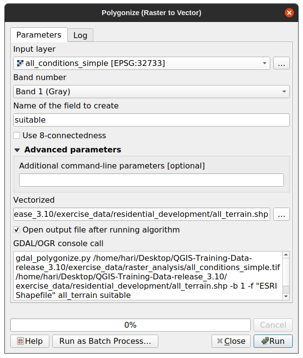

8.1. သင်ခန်းစာ- Raster မှ Vector သို့အမျိုးအစားပြောင်းခြင်း (Lesson: Raster to Vector Conversion)
Raster format နှင့် Vector format များအကြား ပြောင်းလဲခြင်းသည် GIS ပြဿနာတစ်ခုကို ဖြေရှင်းသောအခါသာမက ထိုပထဝီဝင်ဆိုင်ရာ data ပုံစံ ၂ မျိုးအတွက် အမျိုးမျိုးသော လေ့လာဆန်းစစ်ခြင်းနည်းလမ်းများကိုအသုံးပြုသောအခါ raster နှင့် vector data နှစ်မျိုးစလုံးကို သုံးစွဲနိုင်စေပါသည်။ ထိုအရာသည် GIS ပြဿနာတစ်ခုကိုဖြေရှင်းရန်အတွက် data ရင်းမြစ်များနှင့် လုပ်ဆောင်မည့်နည်းလမ်းများကို ထည့်သွင်းစဉ်းစားရာတွင် များစွာ လိုက်လျောညီထွေဖြစ်စေပါသည်။
Raster analysis တစ်ခုနှင့် Vector analysis တစ်ခုကို ပေါင်းစပ်သောအခါ တစ်ခု၏ data အမျိုးအစားကို အခြားတစ်ခု၏ data အမျိုးအစားသို့ ပြောင်းလဲရန်လိုအပ်ပါသည်။ ယခင်သင်ခန်းစာမှ raster ရလာဒ်ကို vector တစ်ခုအဖြစ်သို့ ပြောင်းကြည့်ကြရအောင်။
ဤသင်ခန်းစာအတွက် ရည်မှန်းချက်- Raster ရလာဒ်ကို Analysis ပြီးမြောက်ရန်အသုံးပြုနိုင်သော vector တစ်ခုအဖြစ် ရရှိရန်။
8.1.1. ★★☆ လိုက်လုပ်ကြည့်ပါ- Raster to Vector Tool (Follow Along: The Raster to Vector Tool)
နောက်ဆုံးမော်ဂျူးမှ မြေပုံ raster_analysis.qgs ဖြင့် စတင်ပါ။ ပြီးခဲ့သော လေ့ကျင့်ခန်းများအတွင်း တွက်ချက်ထားသော all_conditions_simple.tif ဖိုင် ရှိပါမည်။
ကိုနှိပ်ပါ။ Tool dialog ပေါ်လာပါလိမ့်မည်။
အောက်ပါအတိုင်း ပြင်ဆင်သတ်မှတ်ပါ-
 Field အမည် (Raster တန်ဖိုးများကို ဖော်ပြနေသော) ကို suitable ဟုပြောင်းပါ။
Layer ကို
exercise_data/residential_developmentအောက်တွင်all_terrain.shpအဖြစ်သိမ်းဆည်းပါ။
ယခုဆိုလျှင် raster ၏တန်ဖိုးများအားလုံးပါဝင်သော vector ဖိုင်တစ်ခုကို ရရှိပြီဖြစ်ပါသည်၊ သို့သော် သင်စိတ်ဝင်စားသည့်ဧရိယာများသည် “suitable” ဧရိယာများဖြစ်ပါသည်၊ ဆိုလိုသည်မှာ suitable တန်ဖိုး 1 ဖြစ်သော polygon များဖြစ်သည်။ ပိုမိုရှင်းရှင်းလင်းလင်းမြင်ရလိုလျှင် ထို layer ၏ style ကို ပြောင်းလဲနိုင်ပါသည်။
8.1.2. ★★☆ မိမိကိုယ်တိုင်ကြိုးစားကြည့်ပါ- (Try Yourself:)
Vector analysis မော်ဂျူးကို ပြန်လည်ကိုးကားပါ။
suitable တန်ဖိုး
1ရှိသော polygon များသာပါဝင်သော vector ဖိုင်အသစ်တစ်ခုကို ဖန်တီးပါ။ဖိုင်အသစ်ကို
exercise_data/residential_development/အောက်တွင်suitable_terrain.shpအဖြစ်သိမ်းဆည်းပါ။
အဖြေ
Layers panel ထဲရှိ all_terrain layer ပေါ်တွင် right-click နှိပ်ပြီး tab ကိုရွေးချယ်ပြီး Query Builder ကိုဖွင့်ပါ။
ထို့နောက်
"suitable" = 1ဟူ၍ query ကိုတည်ဆောက်ပါ။ပေးထားသော query နှင့်မကိုက်ညီသော polygon များအားလုံးကို ဖယ်ကာစစ်ထုတ်ရန် OK ကိုနှိပ်ပါ။ မူရင်း raster ကိုပြန်ကြည့်သောအခါ ဧရိယာများသည် အတိအကျထပ်နေရပါမည်-
Layers panel ထဲရှိ all_terrain layer ပေါ်တွင် right-click နှိပ်ပြီး Save As… ကိုရွေးခြင်းဖြင့် layer ကို သိမ်းဆည်းနိုင်ပါသည်။ ထို့နောက် ညွှန်ကြားချက်တစ်ခုချင်းအတိုင်း ဆက်လက်လုပ်ဆောင်ပါ။
8.1.3. ★★☆ လိုက်လုပ်ကြည့်ပါ- Vector to Raster Tool (Follow Along: The Vector to Raster Tool)
လက်ရှိတွင် မလိုအပ်သေးသော်လည်း အထက်တွင်လုပ်ခဲ့သော Raster မှ Vector သို့အမျိုးအစားပြောင်းခြင်း၏ဆန့်ကျင်ဘက် Vector မှ Raster သို့အမျိုးအစားပြောင်းခြင်းအကြောင်းကို သိထားသင့်ပါသည်။ ပြီးခဲ့သည့်အဆင့်များတွင် ဖန်တီးခဲ့သော suitable_terrain.shp vector ဖိုင်ကို raster အဖြစ်သို့အမျိုးအစားပြောင်းပါ။
ဤ tool ကိုစတင်ရန် ကိုနှိပ်ပြီး အောက်ပါပုံထဲတွင်ပြထားသည့်အတိုင်း သတ်မှတ်ပြင်ဆင်ပါ-

Input layer သည် all_terrain ဖြစ်သည်။
Field name သည် suitable ဖြစ်သည်။
Output raster size units သည် Pixels ဖြစ်သည်။
Width နှင့် Height တို့သည်
837နှင့်661အသီးသီးဖြစ်ကြသည်။Output extent ကို all_terrain layer မှ ရယူပါ။
ရလာဒ်ဖိုင် Rasterized ကို
exercise_data/residential_development/raster_conversion.tifဟုသတ်မှတ်ပါ။
Note
ရလာဒ် image ၏အရွယ်အစားသည် vector သို့အမျိုးအစားပြောင်းထားသော မူရင်း raster ဖိုင်နှင့်အတူတူပင်ဖြစ်သည်။ Image တစ်ခု၏ အတိုင်းအတာများကို ကြည့်ရန် ထို image ၏ metadata ကိုဖွင့်ကြည့်ပါ ( Layer Properties ထဲရှိ Metadata tab )
အမျိုးအစားပြောင်းခြင်းလုပ်ငန်းစဉ်ကို စတင်ရန် Dialog တွင် OK ကိုနှိပ်ပါ။
ပြီးဆုံးသွားသောအခါ ရရှိလာသော raster အသစ်ကို မူရင်း raster နှင့်နှိုင်းယှဉ်ကြည့်ပါ။ Pixel တစ်ခုချင်းအလိုက် အတိအကျ ကိုက်ညီနေသင့်ပါသည်။
8.1.4. နိဂုံးချုပ် (In Conclusion)
Raster format နှင့် vector format များအကြား အမျိုးအစားပြောင်းခြင်းသည် data ကို ကျယ်ကျယ်ပြန့်ပြန့်အသုံးပြုနိုင်ပြီး data များပျက်စီးဆုံးရှုံးခြင်း မဖြစ်နိုင်ပါ။
8.1.5. နောက်ထပ် ဘာအကြောင်းအရာလဲ? (What’s Next?)
ယခုဆိုလျှင် မြေပြင်လေ့လာဆန်းစစ်မှုရလာဒ်များကို vector format ဖြင့် ရှိနေပြီဖြစ်ပါသည်။ ၎င်းတို့ကို လူနေအိမ်များတိုးချဲ့ဆောက်လုပ်ရေးအတွက် မည်သည့်အဆောက်အဦများကို ထည့်သွင်းစဉ်းစားသင့်သည်ဆိုသည့် ပြဿနာကို ဖြေရှင်းရာတွင် အသုံးပြုနိုင်ပါသည်။